一块像素是怎么被算出来的
这份页面按渲染趟拆解参照库 external/sloane-urp：每一块着色代码产生什么视觉细节、由哪个参数控制、参数往大往小改会怎样。所有配图都是本轮用 Assets/Editor/ShaderAtlasCapture.cs 现抓的 002/005 场景图，以及从同一批缓冲直接导出的中间遮罩。
文件:行
结论一句话
实测与预期不符 / 坑
未验证 = 无法从源码或本轮实测确定
阅读指南与管线总览
五件套怎么读
每个机制都按同一顺序讲：代码位置（精确到行，能直接 grep）→ 它产生什么视觉细节 → 控制参数 → 改动方向 → 配图。图注里写明抓图时的参数，便于复现。代码只贴关键 3~10 行，高亮的是这一节的主角。
页面里的“出厂值”以 上游 GitHub 资产为准，而不是本地被实验改过的 .mat。这一点很重要：002 的三个材质在上游根本没有序列化 _NormalEdgeThreshold / _EdgeLevel / _DiffuseDitherStrength / _RimLightColor，运行时走 shader 默认值（依次是 1、-1、0、alpha 0）。本地资产今天被实验写进了 0.82 等值，所以抓图工具每次都先用 mr.material 把三个材质重置成上游有效值。
管线总览
资产里的特性顺序（m_RendererFeatures 序列）是：BeforeRender → RenderOpaqueObject → ConnectivityMapGeneration → PriorityManagement → Shading → Combine → Outline → Debug → ColorCorrection。注意这里和口头流传的“Priority 在 Connectivity 前”不同：PriorityManagement.compute 把 _ConnectivityDetailBuffer 当输入读，所以必须先有连通域；按资产序列也确实是 Connectivity 先入队。页面以源码与资产为准。
为什么有两个相机
主相机 cullingMask=0、farClipPlane=0.02，只负责把投影相机的 ResultBuffer 拷到屏幕（SloanePixelartCopyTargetRendererFeature）。真正渲染的是同一个 GameObject 下的子相机 “Cast Camera”：它把整个场景画进 120×80（002）或 240×160（005）的 HDR 目标，而 G-buffer 用 m_DownSamplingScale=5 的倍率，在 600×400 / 1200×800 上光栅化。屏幕上的“像素块”因此是画布像素被整数倍放大，而不是后处理马赛克。
实验记录方式
所有图由 ShaderAtlasCapture.M01..M12 各跑一次独立批模式 Unity 进程产生，落 docs/images/cellshade-shader/。材质改动一律 mr.material（运行时实例），渲染器特性开关抓完还原；每轮跑完用 find Assets ProjectSettings Packages -newer <时间戳> 校验库资产零改动。中间缓冲用 Graphics.Blit 转到 ARGBFloat 再 ReadPixels（SNorm/UNorm 缓冲不能直接读），深度另用一支 Assets/Editor/ShaderAtlasDepth.shader 处理 reversed-Z。
相机构建与单位格取整
- 代码位置
SloanePixelartCamera.cs:22-24（目标分辨率 / 降采样）、:40-47（画布与 UnitSize）、:113-119（主相机只留拷贝）、:155-277（缓冲尺寸）、SloanePixelartBeforeRenderRendererFeature.cs:38-57（视图矩阵取整）、CommonPass.hlsl:3,24（物体原点取整）。- 视觉细节
- 屏幕上一块“像素”其实是画布像素被整数倍放大。002 的画布是 120×80、内部 G-buffer 600×400（×5）；005 是 240×160 / 1200×800（×5）。相机平移不足半格时，物体轮廓与色带位置不挪动；跨过取整边界时整体挪一格。
- 控制参数
m_TargetResolution（画布）、m_DownSamplingScale（G-buffer 倍率）、投影相机orthographicSize（与画布高度共同决定单位格UnitSize = orthoSize×2/高度）。002/005 都是 0.05 世界单位/格。- 改动方向
- 画布调大 → 细节更多、像素块更小；调小 → 更“糊”、轮廓锯齿更明显。降采样调大 → G-buffer 更细、连通域深度预测更准，但最终画布像素不变。正交尺寸调大 → 单位格变大、吸附更粗。
- 配图
- 下图 1 是 120×80 原生画布，图 2 是同一帧按 ×5 最近邻放大的最终图；图 4 是相机沿右移 0.2 格后的差异热图。
SloanePixelartBeforeRenderRendererFeature.cs:38-40Matrix4x4 viewMatrix = renderingData.cameraData.GetViewMatrix(); viewMatrix.m03 = Mathf.Round(viewMatrix.m03 / unitSize) * unitSize; viewMatrix.m13 = Mathf.Round(viewMatrix.m13 / unitSize) * unitSize; // 只取整 x/y 平移，旋转与 z 不动；随后把这张 V 设成全局矩阵
SloanePixelartCamera.cs:47public float UnitSize => m_CastCamera.Camera.orthographicSize * 2.0f / TargetHeight; // 002: 2×2/80 = 0.05；005: 4×2/160 = 0.05
关键不只相机：SloanePixelartObject.GetSnappedMatrix 还会把每个物体原点变换到同一张已取整的视图矩阵下，再把它的 view-space x/y 吸到同一张 0.05 网格，最后反算回世界空间作为 _SnapOffset（SloanePixelartObject.cs:80-101）。相机和物体用同一把尺子，所以相机整体平移时，物体在屏幕上的相对位置不变。
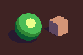

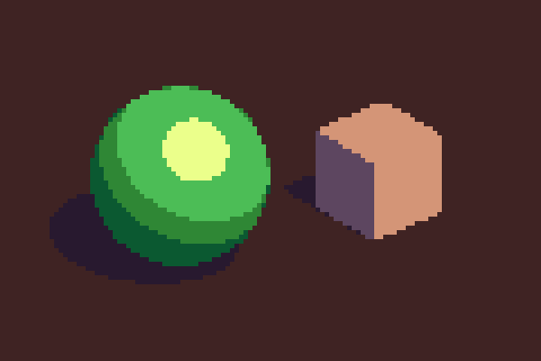
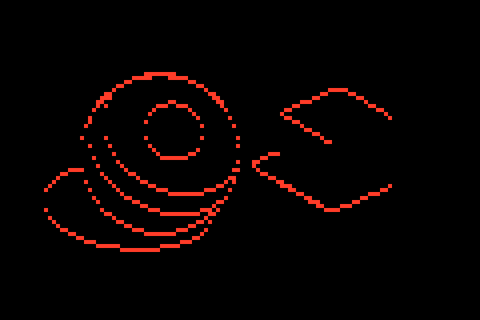
0.05 单位网格，所以相机平移在半个格子内被完全补偿；实测 0.2/0.4/0.6 格移动后只有 3.4%~5% 的边界像素翻档，轮廓本身不位移。没有这层取整，正交相机平移会让每个像素的覆盖关系变化，低分辨率下就是整块形状“爬行”。实测坑：物体吸附偏移是按 transform.hasChanged 缓存的（SloanePixelartObject.cs:55-60,72-77）。只移动相机、不碰物体时，第一次比较必须手动把物体的 transform.hasChanged 置真强制重算，否则测到的是“旧吸附偏移 + 新相机”，会误判成管线抖动。
对象趟：G-buffer 八缓冲
- 代码位置
Shaders/Includes/Passes/DefaultPass.hlsl:42-86；MRT 槽位定义在Shaders/Includes/Inputs/Buffers.hlsl:1-8；缓冲枚举在Scripts/GlobalInfo/OutputBuffer.cs:8-26。- 视觉细节
- 对象趟不计算任何光照。它把“这个像素是什么材质、法线朝哪、优先级多少、边缘要多暗、抖动多强、色板几档”写成 8 张屏幕缓冲。后面的着色趟在 120×80 画布上按这些属性重新算颜色。所以你在最终图上看到的硬边、色带、暗边、描边，都是这里先埋好的“属性”，不是光照的自然结果。
- 控制参数
- 材质面板上的
_BaseColor/_BaseMap、_Smoothness、_Metallic、_NormalEdgeThreshold、_MainLightLevel、_EdgeLevel、_DiffuseDitherStrength、_ApplyOutline、_Priority、_AAScale、_RimLightColor。 - 改动方向
- 改 albedo/smoothness/metallic 是“改材质”；改 level/edge/dither 是“改像素风格”；改 priority/AA 是“改遮挡与抗锯齿的取舍”。这一层改错，后面四趟再怎么调都救不回来。
- 配图
- 下面按缓冲逐张给可视化；每张都标了映射规则。所有图来自 002，出厂材质，120×80 画布、600×400 G-buffer。
| 缓冲 | 格式 / 尺寸 | 写入内容（DefaultPass 行号） | 谁读 | 屏幕后果 |
|---|---|---|---|---|
Depth | depth24 / 600×400 | 深度附件（非 MRT） | Connectivity | 决定哪里是“断开边” |
Albedo | RGBA16 SNorm / 600×400 | :44-46 _BaseMap × _BaseColor，alpha 做 alpha clip | Diffuse / Specular / GI | 所有颜色的底 |
Normal0 | RGBA16 SNorm / 600×400 | :48 normalize(cross(ddy(posWS), ddx(posWS))) | Connectivity | 断边/棱线；不参与着色 |
Normal1 | RGBA16 SNorm / 600×400 | :51-58 顶点法线 + 法线贴图 | 四趟着色 | 光照方向、色带形状 |
PhysicalProperty | RGBA16 SNorm / 600×400 | :66-67 R=smoothness，G=metallic | Specular / GI / Rim | 高光大小、金属/反射 |
ShapeProperty | RGBA16 SNorm / 600×400 | :77-80 R=priority，B=normalEdgeThreshold，A=AAScale/255 | Priority / 着色 / Outline | 遮挡优先级、棱线阈值、AA |
PaletteProperty | RGBA16 SNorm / 600×400 | :69-75 R=level/255，G=dither，B=edge 打包，A=outline 位 | Diffuse / Outline | 色带档数、抖动、暗边、描边 |
RimLightProperty | RGBA16 SNorm / 600×400 | :85 _RimLightColor（alpha=强度） | RimLight | 边缘光颜色与开关 |
UV | RGBA8 SNorm / 120×80 | PriorityManagement 写 RG 偏移 | 着色趟 GET_UV_WITH_PRIORITY | 高优先级物体把邻居像素“推”开 |
ConnectivityDetail | RGBA8 SNorm / 600×400 | ConnectivityCheck 写每方向的 connected/closer/center 位 | Flood / Result / Priority | 连通域中间图 |
ConnectivityResult | RGBA8 UNorm / 120×80 | Result 写 R/G 覆盖率、B=normalDiff、A=8 位方向标志 | Diffuse / GI / Outline | 棱线、AA、描边 |
Normal0 与 Normal1：一个给连通域，一个给光照
Normal0 用屏幕导数反推面法线：cross(ddy(positionWS), ddx(positionWS))。GPU 的 ddx/ddy 在 2×2 像素 quad 内是常量，所以每个 quad 只有一个法线，球面上就出现四边形斑块；方块每个面是平面，整面法线相同，看起来是均匀色块。它只用于连通域的深度预测，不参与光照。Normal1 是顶点插值法线（再乘法线贴图），球面光滑、方块整面均匀，四趟着色都用它。
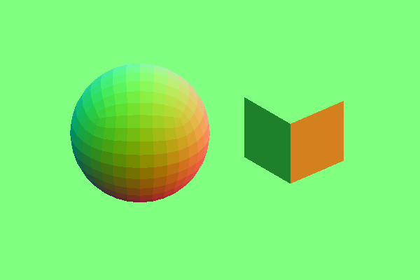
n×0.5+0.5 映射到 RGB。球面是 2×2 quad 拼出的四边形斑块；方块三个面各自均匀；地面朝上所以是绿色（(0,1,0)→(0.5,1,0.5)）。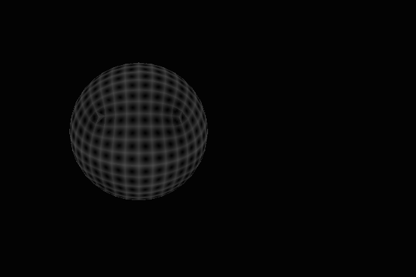
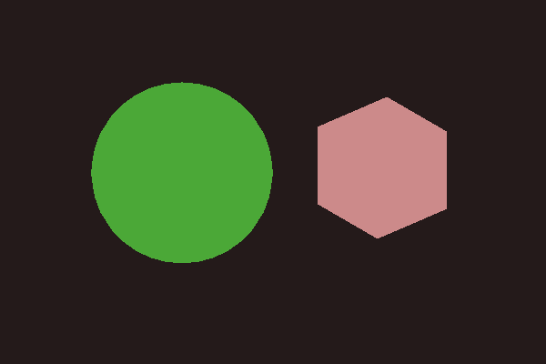
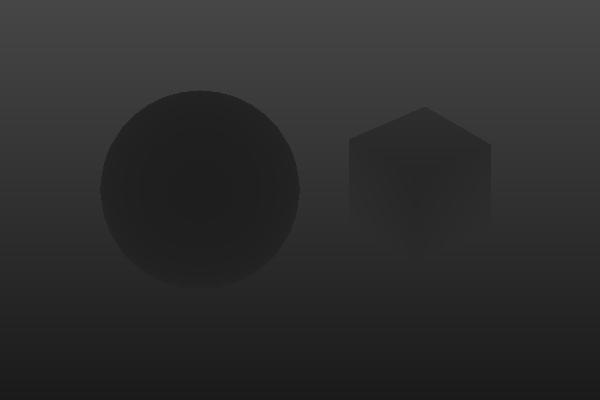
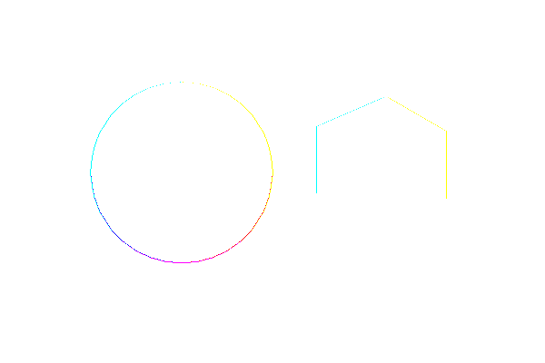
材质属性通道
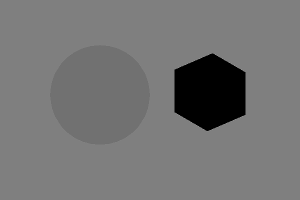


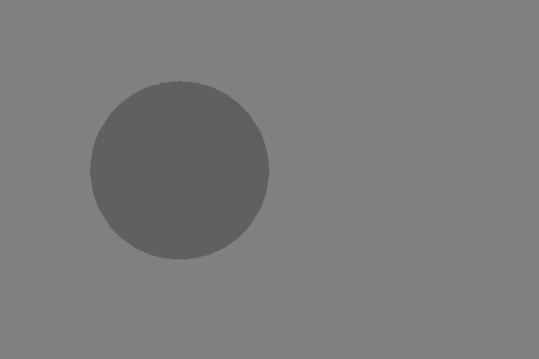

strength=0 时是中性 0.5 的平灰；把 strength 调大，这里会出现屏幕空间图案（见 D 组）。(B×2−1)×128 还原成 -1。
ddx/ddy 的 2×2 quad 本性；它只服务连通域，所以不污染光照。连通域：深度预测与断开边
- 代码位置
Shaders/Includes/Connectivity.hlsl:42-63（深度比较）、:65-103（沿方向预测平面深度）、:98-100（三种断开条件）；ComputerShaders/Connectivity/ConnectivityCheck.compute:30-45（四方向 + 打包）；ConnectivityResult.compute:27-85（5×5 汇总成画布像素 + normalDiff + 8 位方向位）；迭代次数在SloanePixelartConnectivityMapGenerationRendererFeature.cs:65-66。- 视觉细节
- 它不看书色差，只看深度是否连续、面法线是否翻转。所以在同一材质的球面上，轮廓会形成月牙形的断开边；方块的棱线会形成一条干净的线；而球面 Normal0 的 2×2 斑块会让 normalDiff 出现棋盘噪点。断开边本身不直接上色，它被三个下游消费：棱线压暗、AA 阈值、Outline。
- 控制参数
- 特性上的
m_Threshold=0.25（深度预测容差）、m_IterationScale=1.5（Flood 次数 = 降采样×1.5 = 8）；消费侧的_NormalEdgeThreshold、_EdgeLevel、m_AAScaler=1.5。 - 改动方向
- 阈值调大 → 只有更大的深度跳变才断开，轮廓更容易“粘”在一起；调小 → 更多细节被判成断开，棱线/AA 更碎。迭代次数调大 → 连通域在 5×5 块内扩散更充分，边缘更整齐；调小 → 块内出现空洞。
- 配图
- 下面 8 张是把
ConnectivityResult.a的 8 个 bit 拆开后的黑白掩码：白=该位为 1。再下面是 RGB 汇总与 normalDiff。
Connectivity.hlsl:77-100（省略了另一法线分支）float3 normalCenter = TransformWorldToViewDir(_Normal0Buffer[prev].xyz); float2 pixelSpacing = centerPos.xy - targetPos.xy; float dz_x = -normalCenter.x * pixelSpacing.x / normalCenter.z; float dz_y = -normalCenter.y * pixelSpacing.y / normalCenter.z; float predictDepth = centerDepth + dz_x + dz_y; float resultCenter = abs(predictDepth - targetDepth); // 两侧都预测失败才断开；一侧是空背景（法线≈0）也断开 else if(resultCenter > _Threshold && resultTarget > _Threshold) connected = 0;
机制可以一句话概括：假设相邻像素在同一个平面上，用中心像素的 Normal0 把中心深度沿屏幕方向外推到邻居位置；如果预测深度和邻居实际深度差得太多，说明这里不是同一个面，断开。这个“平面预测”比单纯比较深度差更抗斜面临界，所以斜着看的地面不会被误判成断边；但球面法线变化快，预测会失败，于是轮廓处自然出现一圈断开边。
Check 在 600×400 全分辨率上跑，每个像素记录“向右/上/左/下是否连通、是否更近、是否是 5×5 块中心”。Flood 在 5×5 块内迭代 8 次，把块中心的连通标签扩散到块内（细节略，见 ConnectivityFlood.compute）。Result 再把每个 5×5 块压成一个画布像素：R=块内连通比例、G=连通或更近比例、B=块内最大 normalDiff、A=四个画布方向（步长 5）的 connected/closer 共 8 位。
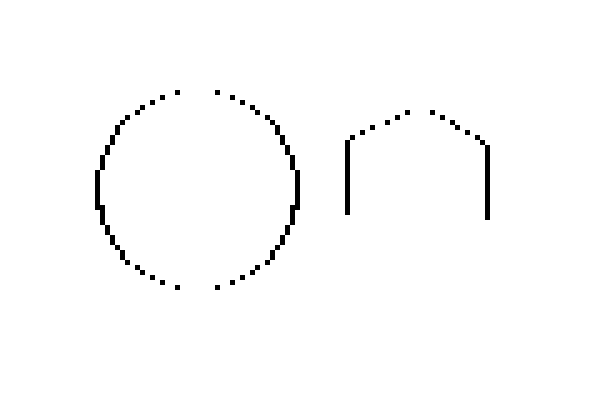
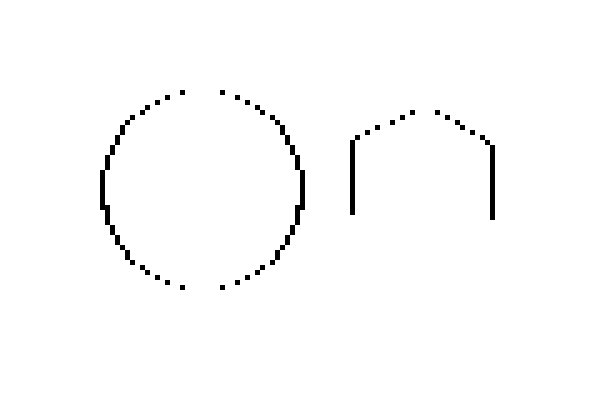
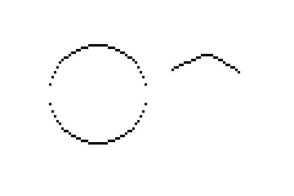
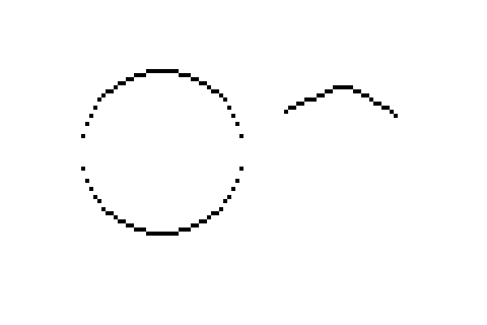
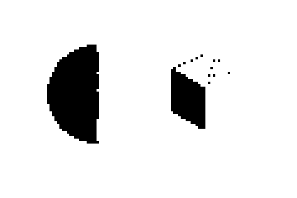
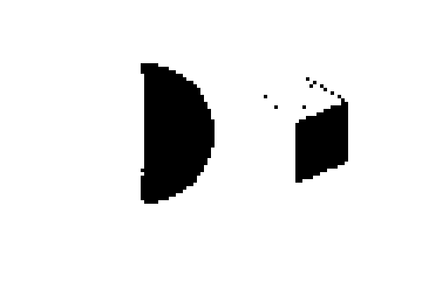
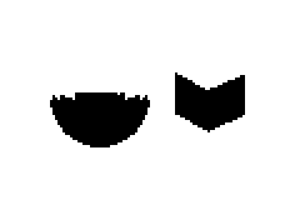
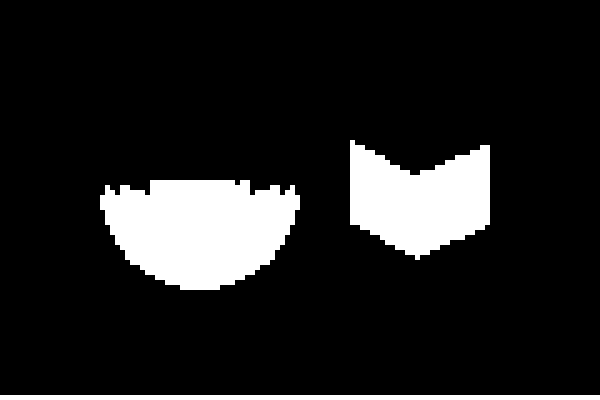
closer<1 时画）。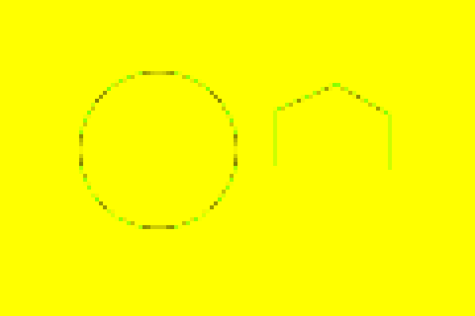
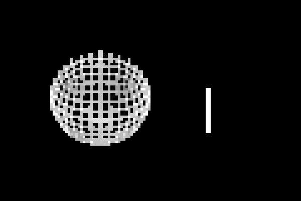
normalDiff 的三个消费方
| 消费方 | 代码 | 怎么用 | 视觉后果 |
|---|---|---|---|
| 棱线压暗 | ShadingPass.hlsl:54 | normalDiff > _NormalEdgeThreshold 时 ndotl += singleLevel × _EdgeLevel | 轮廓/棱线比周围暗一档（或亮一档），随光变深 |
| AA 降档 | ShadingPass.hlsl:53 + SloanePixelartShadingRendererFeature.cs:167 | ndotl > singleLevel && connect < AAScaler/2 时降一档 | 断开处的高光/亮档被收一档，减少锯齿边的闪烁 |
| Outline | OutlinePass.hlsl:35-77 | 四方向 connected<1 && closer<1 时把邻居像素涂成描边色 | 屏幕空间 1 像素统一色描边 |
着色四趟：Diffuse / Specular / GI / RimLight
四趟都是全屏 Blit，源是 120×80 的占位图，真正的输入是对象趟的全局缓冲。它们各自输出一张 120×80 的 HDR 图，最后由 Combine 相加。四趟互不遮挡，所以“高光把漫反射顶掉”“边缘光只出现在轮廓”都是各自在代码里算出来的，不是混合模式。
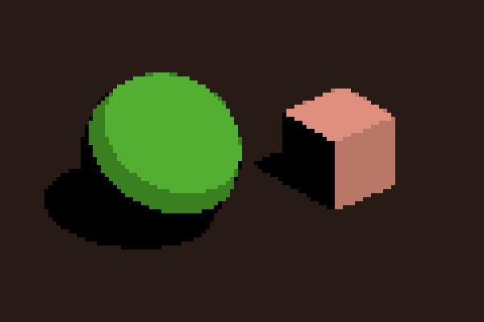
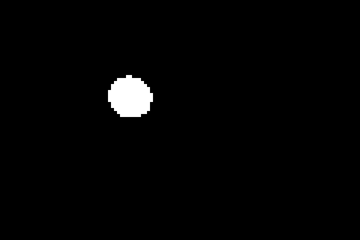
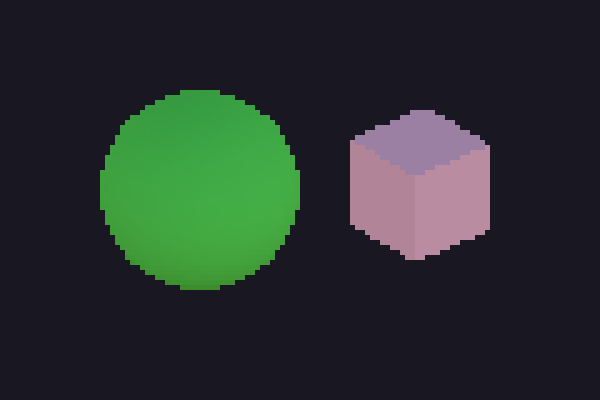
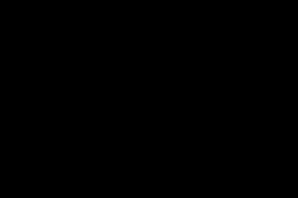
5.1 Diffuse：均匀分档 + 抖动微移 + 棱线压暗
- 代码位置
Shaders/Includes/Passes/ShadingPass.hlsl:37-63（DiffuseShading）、:65-110（Fragment）、:83（取 level）、:90（dither 偏移）、:94（edge 还原）、:101-104（附加光固定 3 档）。- 视觉细节
- 球面出现 N 条等宽色带，边界是硬切的；色带边界可以被 dither 打碎成棋盘；轮廓/棱线可以被单独压暗一档。方块因为每个面只有一个 ndotl，整面落在同一档，所以看起来是“整面平涂”，只有换档时才变色。
- 控制参数
_MainLightLevel（档数）、_DiffuseDitherStrength（抖动幅度）、_NormalEdgeThreshold（哪些边算棱线）、_EdgeLevel（压暗/提亮几档）、主光方向/颜色/强度。- 改动方向
- level↑ → 色带更密、过渡更细；level↓ → 更平涂。dither↑ → 边界更碎、更像网点；0 → 纯硬边。edge 负得越多 → 轮廓越暗；正 → 轮廓反而更亮。
- 配图
- A 组（level 1/2/3/4/6/8，LUT 后 + PreLUT）与 D 组（dither 0/0.02/0.08/0.2 的 4× 放大）。
ShadingPass.hlsl:44-58if(level > 0.0) { float singleLevel = 1.0 / (level - 1.0); ndotl = pow(ndotl, 1.0 / 2.2); ndotl += singleLevel * offset; // dither：±1 档微移边界 ndotl = multiStep(ndotl, level, 0.0, 0.0); // 均匀分 N 档 if((ndotl > singleLevel && connect < _ConnectivityAntialiasingThreshold)) ndotl -= applyAA * singleLevel; if((normalDiff > normalEdgeThreshold)) ndotl += singleLevel * normalEdgeLevel; ndotl = clamp(ndotl, 0.0, 1.0 + singleLevel); ndotl = lerp(transmission, 1.0, ndotl); }
multiStep(value, N, 0, 0) 的输出是 0, 1/(N−1), …, 1 共 N 档（Math/Step.hlsl:1-13）。所以 level=4 是 0 / 0.333 / 0.667 / 1 四条带；level=8 是 8 条。注意 level=1 是退化配置：singleLevel = 1/(1−1) = ∞，任何 ∞×0 的项都会变 NaN，棱线项一乘就把整块压成最低档。实测 level=1 的图几乎全黑，即使把 _EdgeLevel 设 0 也救不回来（因为 normalDiff>threshold 时仍有 ∞×0）。要用“单档平涂”，最低用 level=2，或把 _NormalEdgeThreshold 设到大于最大 normalDiff。
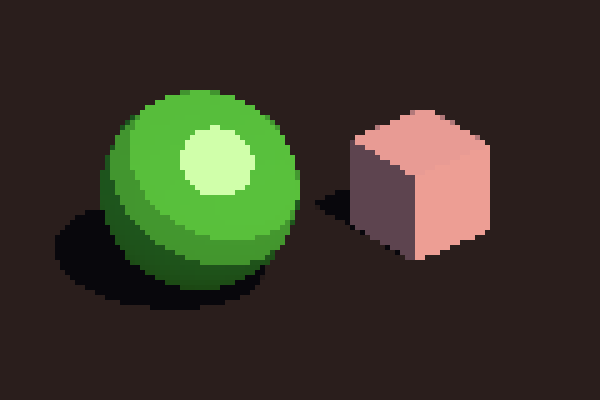

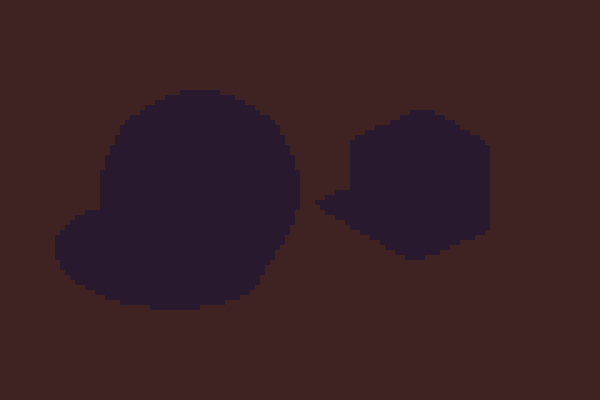
singleLevel=∞ 的 NaN/∞ 退化。Dither 只在色带边界可见
dither 值在对象趟按屏幕空间采样 _DiffuseDitherPalette，再打包进 PaletteProperty.g（DefaultPass.hlsl:70-72）。着色时 ditherOffset = g×2−1，乘以 singleLevel 后加到 ndotl 上，所以它只把“刚好在档边界附近”的像素推过边界；在色带内部，±0.2 档不足以改变档位，完全看不见。实测把强度从 0 拉到 0.2，球面下缘的明暗交界处才出现一条棋盘带。
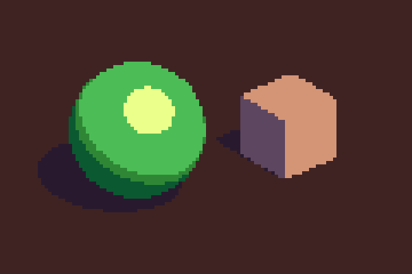
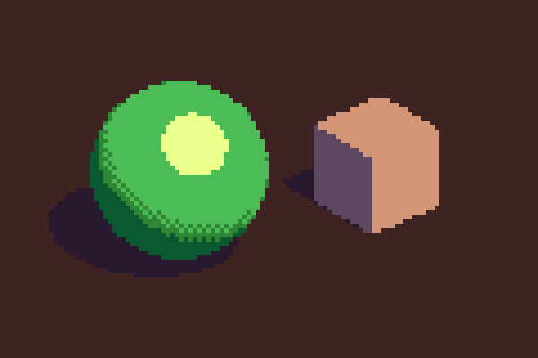
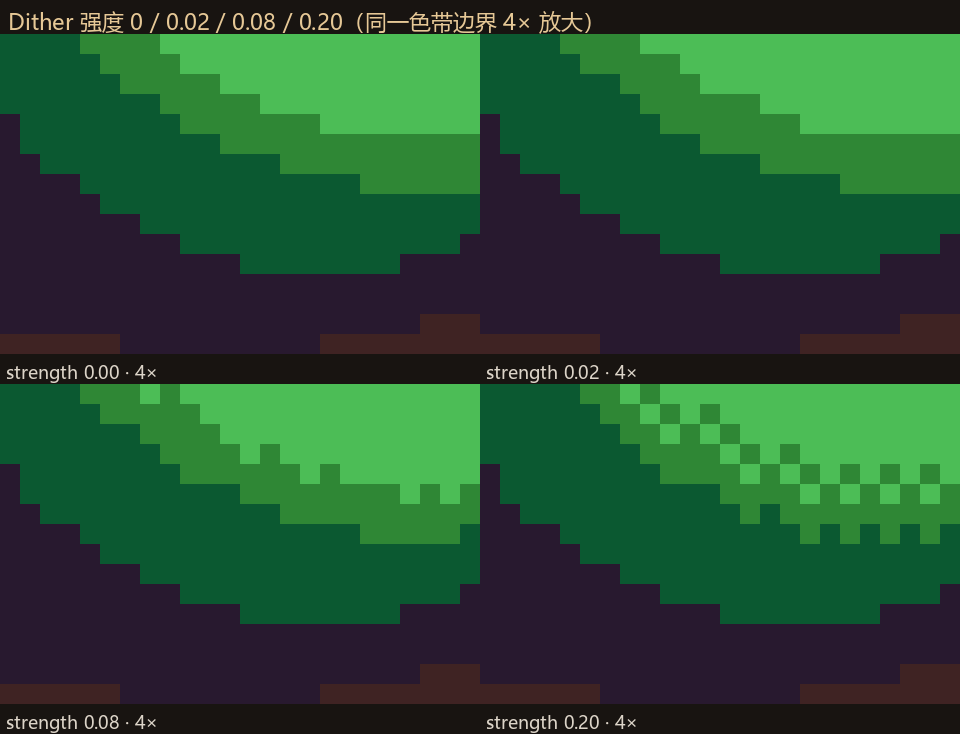
dither_0、ST=(4,4)，即每个 G-buffer 像素一个图案值；降到画布后每个画布像素取一个值。5.2 Specular：指数控制大小，两档量化出硬边
- 代码位置
ShadingPass.hlsl:117-126（SpecularShading）、:141-144（取 smoothness / 指数 / 高光色）、:158（主光固定 level=2）。- 视觉细节
- 球面出现一块离散色块高光，边缘是硬切的；光滑度越高，块越小、越亮、越靠中心；光滑度越低，块越大、越暗、越“糊”（但仍是硬边）。方块只在某个面正好对上半角向量时整面亮起，所以通常看不到高光。
- 控制参数
_Smoothness（指数exp2(5s+1)）、_Metallic（高光色从白渐变到 albedo）、光源方向/颜色。- 改动方向
- smoothness↑ → 指数↑ → 高光更小更集中；smoothness↓ → 高光铺满大半个球。metallic↑ → 高光染上 albedo 颜色，同时漫反射被
(1−metallic)压掉。 - 配图
- B 组（球 smoothness 0.2/0.443/0.6/0.75/0.95）与 E 组（方块 metallic 0/0.5/1）。
ShadingPass.hlsl:141-144,121-125float smoothness = physicalProp.r; float expSmoothness = exp2(5.0 * smoothness + 1.0); float3 specular = lerp(float3(1,1,1), albedo, metallic); half NdotH = half(saturate(dot(normal, halfVec))); float modifier = pow(NdotH, expSmoothness) * light.distanceAttenuation * light.shadowAttenuation; modifier = multiStep(modifier, 2.0, 0.0, 0.0); // 只有 0 / 1 两档 return light.color * specular * modifier * smoothness;
multiStep(..., 2, 0, 0) 的输出只有 0 或 1，所以高光没有羽化，只有“在内/在外”。指数 exp2(5s+1) 的范围：s=0.2 → 4，s=0.443 → 9.3，s=0.6 → 16，s=0.75 → 26.9，s=0.95 → 53.8。指数越大，NdotH^exp 衰减越快，高光斑越小。乘上 smoothness 又让低光滑度的高光整体变暗，所以 0.2 时是一大块暗绿高光，0.95 时是一个小白点。
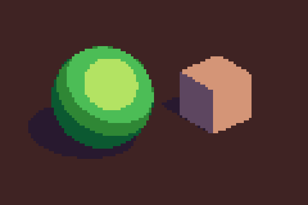
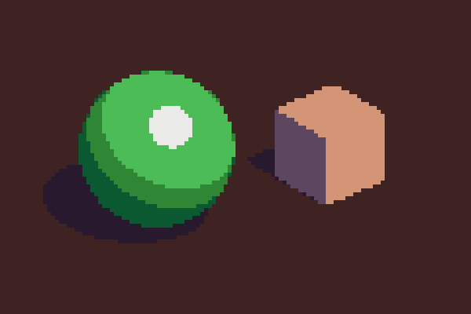
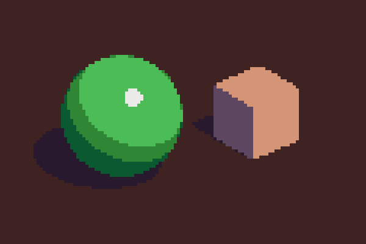
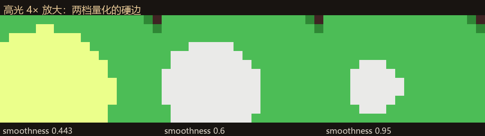
金属度在这套管线里不是“更亮的金属”，而是“把漫反射换成反射/高光”：outputColor *= (1.0 - metallic)（:107），高光色变成 lerp(white, albedo, metallic)，GI 的 brdfData 也按金属走（:199-218）。所以 metallic=1 的方块会明显变暗，只剩下环境反射和高光，和常见的 PBR 金属观感一致。

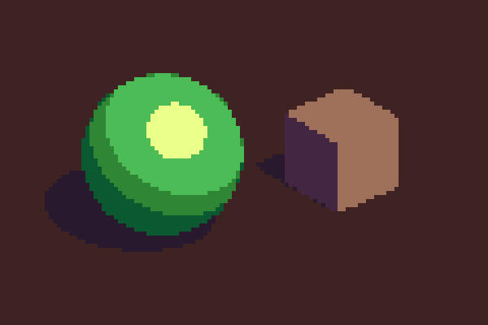
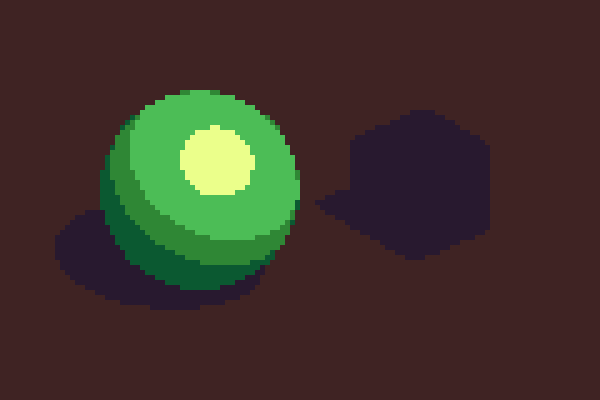
exp2(5s+1) 控制，“硬边”由 multiStep(...,2) 控制，“颜色”由 lerp(white, albedo, metallic) 控制。三者独立，所以可以同时做到“小、硬、白”。5.3 GI：SH + 天空反射 + NoV 两档
- 代码位置
ShadingPass.hlsl:168-181（GlobalIlluminationShading）、:173（NoV 两档）、:177（GlossyEnvironmentReflection）、:183-230（Fragment）、:224-227（SAMPLE_GI）。- 视觉细节
- 暗面不是纯黑，而是带天空色的环境光；球的掠射边缘有一圈更亮的“边缘光”，但它是 GI 的 fresnel，不是 RimLight；金属方块在 metallic↑ 后漫反射消失，只剩天空反射，所以会整块变暗、顶面反天空略亮。环境光强度变化时，最终图不是线性变亮，而是被 LUT 吸到不同的色相（002 的方块在 ambient=2.0 时变成粉白）。
- 控制参数
- 场景
RenderSettings.ambientMode/ambientIntensity+ 天空盒（SH 探针）、材质_Smoothness（perceptual roughness）、_Metallic、_ConnectivityAntialiasingThreshold（决定 NoV 是否 +1 档）。 - 改动方向
- 环境光↑ → GI 缓冲变亮、暗面细节更多，但色板可能跳到另一个色相；环境光↓ → 暗面压成近黑。smoothness↑ → 反射更锐、掠射边更干净；metallic↑ → 漫反射↓、反射占比↑。
- 配图
- F 组（ambient 1.0/1.4/2.0 的最终图 + GI 缓冲×2）。
ShadingPass.hlsl:172-179half3 reflectVector = reflect(-viewDirectionWS, normalWS); half NoV = multiStep(saturate(dot(normalWS, viewDirectionWS)), 2.0, 0.0, levelBias); half fresnelTerm = lerp(Pow4(1.0 - NoV), 0.0, brdfData.reflectivity); half3 indirectDiffuse = bakedGI; half3 indirectSpecular = GlossyEnvironmentReflection(reflectVector, brdfData.perceptualRoughness, 1.0h); half3 color = EnvironmentBRDF(brdfData, indirectDiffuse, indirectSpecular, fresnelTerm);
NoV 只有两档（multiStep(...,2)），所以“掠射边”不是渐变，而是一圈硬边。当像素位于断开边且 AA 开启时，levelBias=1（:227 的三元表达式），把这一圈的 NoV 抬高一级，让边缘更亮、更干净。这个 levelBias 是 GI 与连通域唯一的耦合点。
环境光来自 SAMPLE_GI(lightmapUV, SH, normalWS)：002/005 没有烘焙 lightmap，实际吃的是天空盒生成的环境探针（SH）。批模式下天空盒探针不会自动生成（unity_SHA* 全零），必须在场景加载后连续调 DynamicGI.UpdateEnvironment() 数十帧，且亮度约为正常编辑器的 1/1.4；本页所有 002/005 图都按 ×1.4 补偿后再抓。如果不补偿，暗面和投影会接近全黑，看起来像“GI 没生效”。
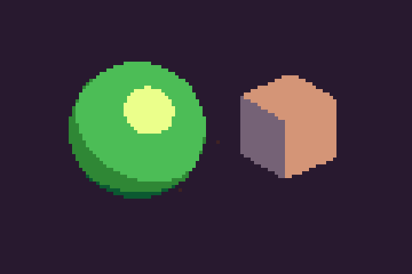
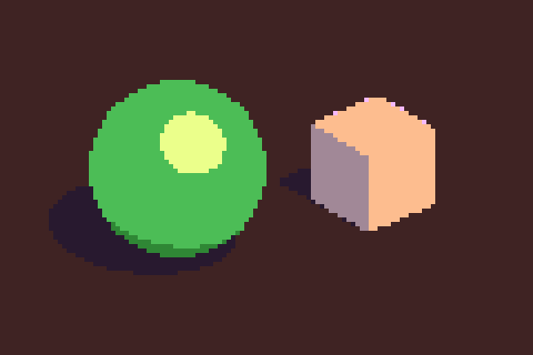
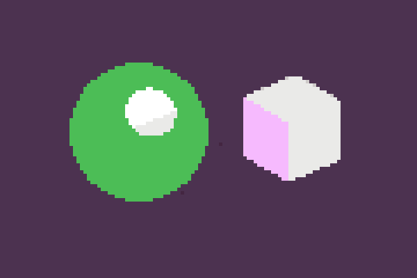
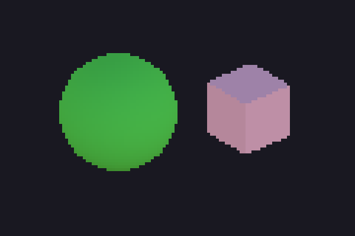
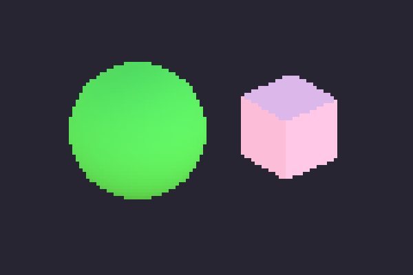
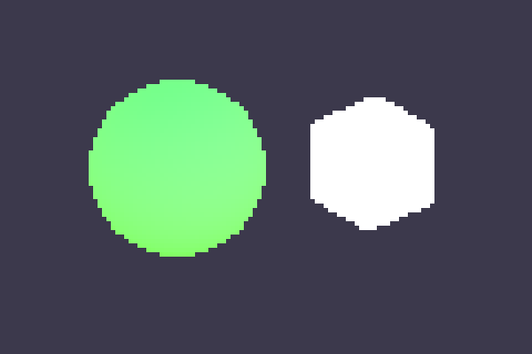
5.4 RimLight：三件套 + 轮廓门控
- 代码位置
Shaders/Includes/RimLight.hlsl:10-25（RimLightShading）、ShadingPass.hlsl:246-284（Fragment / 循环）、SloanePixelartRimlight.cs:28-77（组件与静态字典）、SloanePixelartShadingRendererFeature.cs:77-83（每帧刷新 32 盏缓冲）。- 视觉细节
- 只在朝光那侧的轮廓边出现 1 像素左右的亮线；暗侧、内部、背面都没有。它不是“物体边缘泛光”，而是“轮廓断开边 + 屏幕空间光方向匹配”两个条件同时满足才出光。颜色由组件颜色 × 材质
_RimLightColor.rgb，强度由材质 alpha 控制。 - 控制参数
- 场景里
SloanePixelartRimlight的数量/方向（=物体 forward）/颜色；材质_RimLightColor的 RGB 与 alpha；上限 32 盏。 - 改动方向
- 旋转组件 → 亮边沿轮廓移动；alpha=0 → 关闭；颜色越亮 → 轮廓线越亮；加第二盏反方向 → 两侧轮廓各有一条不同颜色的线。暗侧无论怎么转都不会亮，因为
ndotl已经被 saturate 到 0。 - 配图
- H 组（0 盏 / 暖 / 冷 / 两盏；同一盏旋转 4 个方向）。
RimLight.hlsl:12-22float ndotl = dot(direction, normal); ndotl *= factor; ndotl = saturate(ndotl); float2 screenSpaceLightDir = normalize(TransformWorldToViewDir(direction).xy); float modifier = (1.0 - float(connectedToRight)) * clamp(screenSpaceLightDir.x, 0.0, 1.0) + (1.0 - float(connectedToLeft)) * clamp(-screenSpaceLightDir.x, 0.0, 1.0) + (1.0 - float(connectedToUp)) * clamp(screenSpaceLightDir.y, 0.0, 1.0) + (1.0 - float(connectedToDown)) * clamp(-screenSpaceLightDir.y, 0.0, 1.0); modifier = multiStep(modifier * ndotl, level, 0.0, 0.0);
三件套缺一不出光：① 场景里挂 SloanePixelartRimlight 组件（方向取 transform.forward，颜色取组件字段；实例入静态字典，每帧 RefreshRimLights() 拷进 _RimLights，MAX_RIMLIGHTS=32）；② 材质 _RimLightColor 的 alpha 是强度，RGB 是乘色（002 出厂没有这个属性，走 shader 默认 alpha=0，所以天然不出光）；③ 着色趟的 for(i < _RimLightsCount) 循环。
为什么暗侧必然没有？RimLightShading 先算 dot(rimDir, normal) 并 saturate；法线背向光源时它是 0，后面乘什么都是 0。能否出光还取决于轮廓门控：循环传入的是 connectedToRight | !closerThanRight，而函数里用的是 (1 − connected)，合起来就是 “该方向断开 且 中心比邻居更近”——只有外轮廓的近侧边才满足，内部深度断边（中心更远）不会亮。

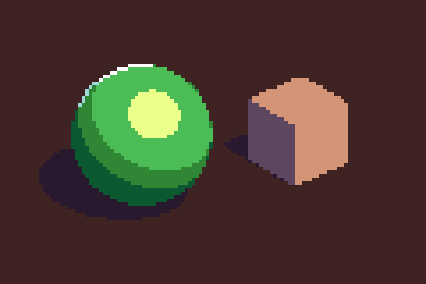
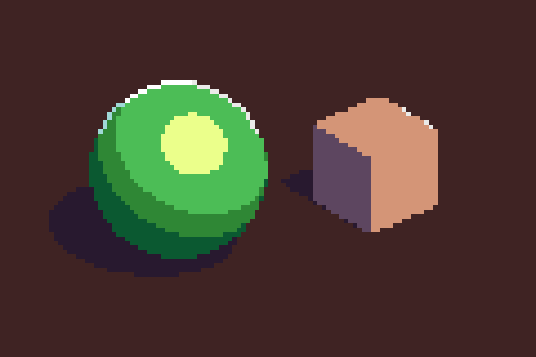
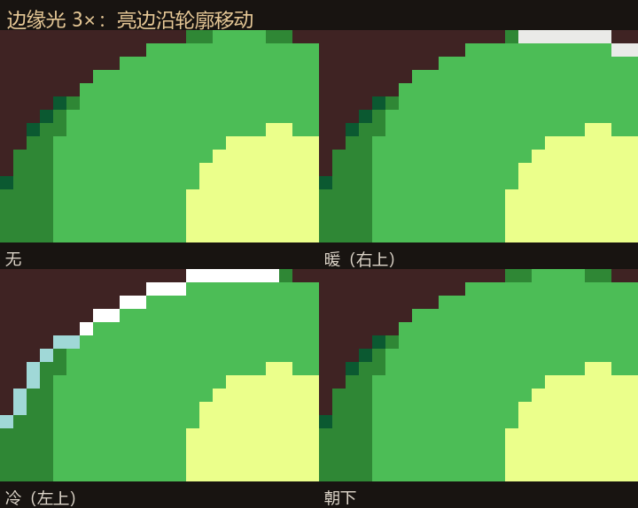
saturate(dot)（暗侧归零）。它不是后处理描边，和 Outline 的统一色描边是两套完全不同的机制。合成与颜色校正
- 代码位置
ShadingPass.hlsl:232-244（Combine）、:238（clip）；Shaders/Blit/ColorCorrection.shader:33-40（16³ 查表）；SloanePixelartColorCorrectionRendererFeature.cs:39-43（_Resolution = palette.height）。- 视觉细节
- 四趟逐像素相加，没有混合权重；背景像素被
clip丢弃，露出相机清屏色/地面。之后整帧被 16³ 色板 LUT 吸成离散色：002 的整帧从 PreLUT 的 85 种颜色压到 8 种；色板不同，整幅画的色相/明度关系就换一套。 - 控制参数
- 四趟各自的输出（由前面的材质参数决定）；ColorCorrection 特性上的
m_Palette纹理（每期一套）；_Resolution固定取 palette 高度 16。 - 改动方向
- 换色板 → 整套色相/明度映射换掉，比调任何单个材质参数都猛；关 ColorCorrection → 看到连续的 PreLUT 图，颜色更“脏”但过渡更细；
clip关掉 → 背景会被四趟着色污染（通常不是想要的效果）。 - 配图
- 四趟相加 vs PreLUT vs LUT 后；四张色板在同一场景的对照；LUT 的 16³ 切片与“只改明度”的吸附实验。
ShadingPass.hlsl:237-243float4 diffuse = tex2D(_DiffuseBuffer, uv); clip(diffuse.a - 1); float4 specular = tex2D(_SpecularBuffer, uv); float4 globalIllumination = tex2D(_GlobalIlluminationBuffer, uv); float4 rimLight = tex2D(_RimLightBuffer, uv); return float4(diffuse.rgb + specular.rgb + globalIllumination.rgb + rimLight.rgb, 1.0);
实测把四张缓冲在 CPU 上相加，再与关掉 ColorCorrection 的 ResultBuffer 对比：99.66% 像素逐字节相同，最大差 1/255。这说明 Combine 就是纯加法，没有隐藏的权重/色调映射；剩下的 0.34% 是 SNorm 量化与浮点舍入。背景之所以能被 clip 掉，是因为着色趟的 GET_ALBEDO 在 albedo alpha=0 处已经 discard，Diffuse 缓冲保留清屏的 alpha=0；Combine 只保留 alpha=1 的几何像素。
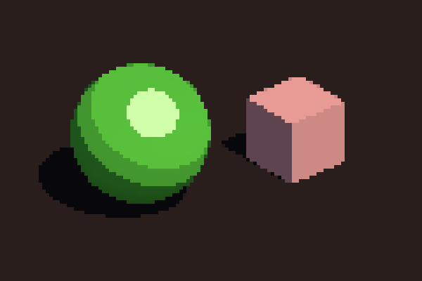

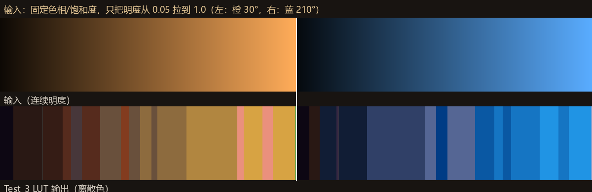
ColorCorrection.shader:36-40 复算，色板 Test_3）：上排是输入（固定色相/饱和度，明度从 0.1 到 1.0），下排是 LUT 输出。输入明度平滑变化，输出却会跳到不同色相/饱和度——这就是“明度主导吸附”。clip 的证据：把地面关掉、背景涂成品红
002 的地面铺满全屏，所以平时看不到背景像素。把 Plane 的 Renderer 关掉、Cast Camera 的清屏色设成品红、ColorCorrection 关掉，再抓一张：物体区域仍然是四趟着色后的颜色，背景区域保持纯品红。配合 Diffuse 缓冲的 alpha 掩码（物体=1，背景=0），就能确认 clip(diffuse.a - 1) 丢的是背景，而不是“把背景涂黑”。
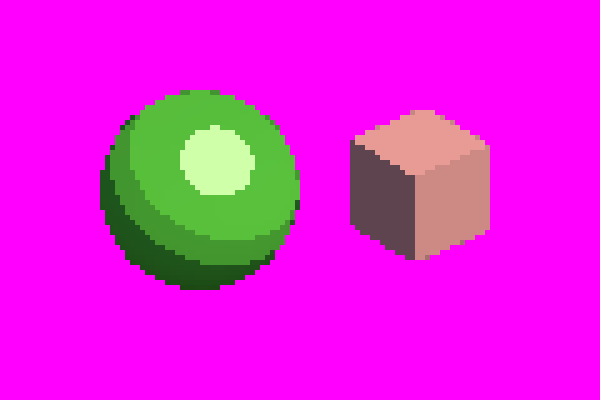
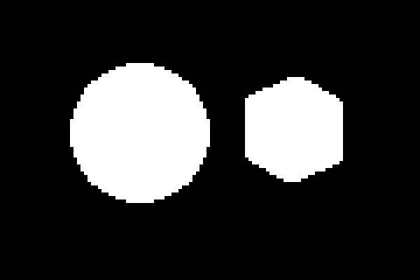
clip(a−1) 只保留白色区域。ColorCorrection.shader:35-40float3 outputColor = tex2D(_MainTex, uv).rgb; outputColor = LinearToSRGB(outputColor); float2 targetCoord = float2(outputColor.r / res + floor(outputColor.b * res) / res, 1.0 - outputColor.g); outputColor = _Palette.Sample(sampler_Palette_point_clamp_sampler, targetCoord).rgb;
查表是严格的 16×16×16 分箱：r 和 b 一起决定 x（16 个 b 切片，每片 16 列 r），g 决定 y（1−g）。所以输入先被量化到每轴 16 级，再去色板里取最近色。色板本身是“每期一套”的烘焙结果：002 参考帧对应 Test_1（64 色）、006 金属锭对应 Test_0（46 色）、v3 岩石对应 Test_3（124 色）。出厂渲染器接的是 Test_2（76 色）。烘焙算法细节（Lab 的 a/b 归一化 + CIEDE2000）不在本页展开；这里只记住结果：明度稍微变一点，就可能吸到另一个色相的色板色。
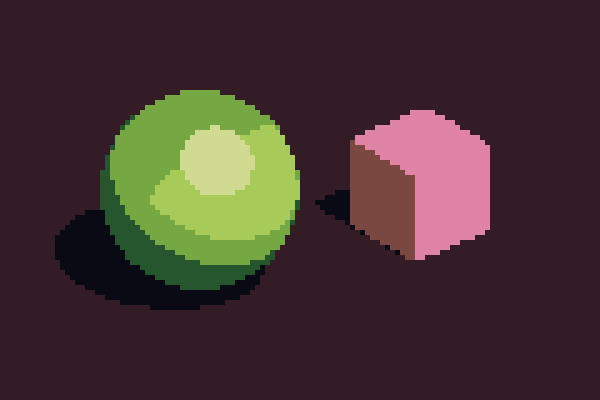
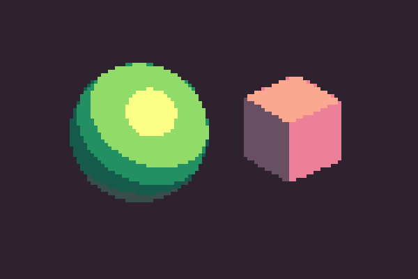

Outline 特性：统一色描边 vs 棱线暗边
- 代码位置
Shaders/Blit/Outline.shader:12-26（Pass）、Shaders/Includes/Passes/OutlinePass.hlsl:16-24（ApplyOutline）、:26-84（四方向邻居检测）；特性字段在Sloane Pixelart Cast Renderer.asset（m_Active: 0、m_SolidColor: 1、m_OutlineColor: 0.254717）。- 视觉细节
- 沿物体轮廓画一圈 1 个画布像素宽的深灰线（在 600×400 输出里是 5 像素宽）。它只看连通域的 connected/closer 位，不看光照，所以颜色恒定、不随光变深；关掉特性就完全消失。出厂是关闭的，002 默认图里没有这圈线。
- 控制参数
- 特性
m_Active（总开关）、m_SolidColor（统一色/乘底色）、m_OutlineColor（颜色）；材质_ApplyOutline（这个物体参不参加，存在PaletteProperty.a的 bit7）。 - 改动方向
m_SolidColor=1→ 所有轮廓都是同一个颜色；=0→ 轮廓 = 邻居底色 × 描边色，会随物体变色。把_ApplyOutline设 0 → 该物体不被描边。颜色改亮/改暗只影响线，不影响物体内部。- 配图
- I 组：同一帧 Outline 关 / 开；以及 5× 放大看线宽。
OutlinePass.hlsl:35-43（其余三个方向同构）if(connectedToRight < 1 && closerThanRight < 1) { uv = uvCache + float2(_ScreenParams.z - 1.0, 0.0); // 采样右邻居 GET_PALETTE_PROP if(applyOutline > 0) { outputColor += ApplyOutline(uv); // 统一色或 底色×描边色 weight += 1.0; } }
_ScreenParams.z - 1 就是 1/画布宽，所以“邻居”正好是一个画布像素。Outline 是在当前像素上写邻居的描边色：当前像素必须在该方向“断开且不更近”，然后看邻居的 applyOutline 位。结果就是线画在物体的外侧轮廓上，宽 1 个画布像素。它和 _EdgeLevel 的棱线暗边不是一回事：后者在 Diffuse 趟里改的是物体自己的 ndotl，颜色由光照/材质/色板共同决定，随光变深；Outline 是在最终颜色上盖一层恒定色，和光无关。
| 棱线暗边（_EdgeLevel） | Outline 特性 | |
|---|---|---|
| 在哪一趟 | Diffuse 着色趟内部 | Combine 之后的屏幕 Blit |
| 判据 | normalDiff > _NormalEdgeThreshold | connected<1 && closer<1 的四方向 |
| 颜色 | 该像素自己的 ndotl 降一档 → 随材质/光照/色板变 | m_OutlineColor 恒定色（或底色×色） |
| 位置 | 物体内部贴着轮廓的一圈 | 轮廓外侧 1 个画布像素 |
| 出厂 | 002 阈值 1（关）；005 岩石 0.82（开） | m_Active:0（关） |

7.1 两种样式，与 v3 视频用的是哪一种（2026-11-24 实测）
同一个描边趟有两个着色分支，由关键字 _OUTLINE_SOLID_COLOR（特性字段 m_SolidColor）切换：
OutlinePass.hlsl:16-24 · ApplyOutline#ifdef _OUTLINE_SOLID_COLOR return _OutlineColor.rgb; // 样式一：纯色，与物体/光照无关 #else return baseColor * _OutlineColor.rgb; // 样式二：本体底色 × 描边色 → 随光变深 #endif
样式二取的是邻居像素的漫反射色，所以描边天然跟着该处光照走——亮面边的描边亮、影子侧边的描边暗。
用像素序列直接判别 v3 视频柱子左缘（y=300 横扫）：
v3 视频帧 004.jpg · y=300 · x=340→380背景 (95,94,100) → 暗棕 (94,75,60) → 亮米白 (247,236,208) → 正面 (128,110,106) 我方 outline2（本体色）背景 (101,81,82) → 暗棕紫 (73,51,59) → 亮米色 (188,159,153) → 正面 (129,112,107) 我方 outline1（纯色） 背景 (101,81,82) → 灰蓝 (142,144,151) → 亮米色 (188,159,153) → 正面 (129,112,107)
_OutlineColor 与材质 _RimLightColor —— 视频的描边棕更暖亮、边缘光更接近白米色。_Smoothness 约 0.6~0.75，0.95 会发白。参数速查表
“位置”列都能在源码里 grep 到；“出厂值”以上游 GitHub 资产为准（本地 002 材质被实验改过，见第 10 节）；“参考视频/图”只能确定色板与 005 岩石材质，其余标“未验证”。
| 视觉细节 | 参数 | 位置（文件:行） | 往大改 / 往小改 | 出厂值 | 参考视频/图 |
|---|---|---|---|---|---|
| 色带条数 | _MainLightLevel | DefaultPass.hlsl:69；ShadingPass.hlsl:44-52 | ↑ 条带更密更细；↓ 更平涂；1 是 ∞ 退化，会黑 | 002 方块 4 / 球 3 / 地面 4；005 Rock 4；006 Gold 4 | 未验证（参考图的条带数没有逐像素反推） |
| 色带边界抖动 | _DiffuseDitherStrength | DefaultPass.hlsl:70-72；ShadingPass.hlsl:90,50 | ↑ 边界碎成棋盘；0 = 硬边 | 002 三材质 0（上游未序列化）；005 Rock 0.008；007 0.18~0.207 | 未验证 |
| 棱线压暗阈值 | _NormalEdgeThreshold | DefaultPass.hlsl:79；ShadingPass.hlsl:54 | ↑ 只有更强法线差才压暗；1 = 关；↓ 更多边被压暗 | 002 三材质 1（shader 默认）；005 Rock 0.82；RockGround 0.1；006 Gold 0.9 | 005 岩石 0.82（与资产一致） |
| 棱线压暗幅度 | _EdgeLevel | DefaultPass.hlsl:73；ShadingPass.hlsl:94,54 | 负 = 压暗 N 档；正 = 提亮 N 档；0 = 不压 | 002 -1（默认）；005 Rock -1；006 Gold +1 | 005 岩石 -1 |
| 高光大小/亮度 | _Smoothness | DefaultPass.hlsl:66；ShadingPass.hlsl:142,122 | ↑ 高光更小更亮（指数 exp2(5s+1)）；↓ 更大更暗 | 002 球 0.443 / 方块 0 / 地面 0.5；005 Rock 0.05；006 Gold 1 | 未验证 |
| 金属感 | _Metallic | DefaultPass.hlsl:67；ShadingPass.hlsl:107,144,202 | ↑ 漫反射↓、高光/反射取 albedo；1 = 只剩反射 | 002 三材质 0；005 Rock 0.2；006 Gold 0.8 | 005 岩石 0.2 |
| 环境光亮度/色相 | RenderSettings.ambientIntensity | 场景 RenderSettings；ShadingPass.hlsl:226 | ↑ GI 变亮，但 LUT 会跳到另一色相；↓ 暗面近黑 | 002/005 序列化 1.0；批模式抓图 ×1.4 | 005 对齐用 1.4（编辑器等效） |
| 主光强度/颜色 | Directional Light | 场景；ShadingPass.hlsl:39-40,61 | ↑ 整体提亮、色带向高档移动；颜色改变所有受光面色相 | 002 强度 1.2 暖白；005 强度 1 暖白 | 未验证 |
| 边缘光方向/亮边位置 | SloanePixelartRimlight 的 forward | RimLight.hlsl:12,16-20；SloanePixelartRimlight.cs:39,53 | 旋转 → 亮边沿轮廓移动；背光侧永远没有 | 002 0 个组件；005 2 个（前/后） | 005 金/蓝两盏 |
| 边缘光颜色/强度 | 组件 m_Color + 材质 _RimLightColor | RimLight.hlsl:24；ShadingPass.hlsl:280 | alpha=0 关闭；alpha↑ 更亮；颜色乘组件色 | 002 上游无该属性（默认 alpha 0）；005 Rock alpha 1 | 005 金/蓝 |
| 统一描边 | Outline 特性 m_Active / m_OutlineColor | OutlinePass.hlsl:16-24,35-77；renderer asset | 开 = 1 画布像素恒定色；关 = 无；颜色只改线 | 002 出厂关，色 0.2547 灰，SolidColor=1 | 视频里未见（未验证） |
| 整幅画的色相/明度映射 | ColorCorrection m_Palette | ColorCorrection.shader:39-40；SloanePixelartColorCorrectionRendererFeature.cs:39-43 | 换色板 = 换整套离散答案；调单个材质只换落箱 | 002 出厂 Test_2（76 色）；005 场景用 Test_2 | 002 参考 Test_1；005 岩石 Test_3；006 Test_0 |
| 画布分辨率/像素块 | m_TargetResolution / m_DownSamplingScale | SloanePixelartCamera.cs:22-24,40-47 | 画布↑ 更细；降采样↑ G-buffer 更细，但最终像素块不变 | 002 120×80×5；005 240×160×5 | 未验证（视频分辨率 960×640 不等于画布） |
| 吸附单位格 | 投影相机 orthographicSize / 画布高 | SloanePixelartCamera.cs:47；SloanePixelartBeforeRenderRendererFeature.cs:39-40 | ↑ 格子更大、吸附更粗；↓ 更细但更容易抖 | 002/005 都是 0.05 世界单位 | 未验证 |
| 连通域断开灵敏度 | Connectivity 特性 m_Threshold | renderer asset；Connectivity.hlsl:100 | ↑ 更少断开（轮廓更“粘”）；↓ 更多断开 | 0.25 | 未验证 |
| 连通域扩散范围 | m_IterationScale | SloanePixelartConnectivityMapGenerationRendererFeature.cs:65-66 | ↑ Flood 次数更多（5×scale×1.5）；↓ 块内空洞 | 1.5 → 8 次 | 未验证 |
| AA 降档阈值 | Shading 特性 m_AAScaler | SloanePixelartShadingRendererFeature.cs:19,167；ShadingPass.hlsl:53 | ↑ 更少像素被降档；↓ 更多断开处被收一档 | renderer asset 1.5 → 阈值 0.75 | 未验证 |
| 附加光档数 | 硬编码 3 | ShadingPass.hlsl:103 | 不可调；附加光不吃材质 _MainLightLevel | 3 | 未验证（002 没有附加光） |
| 色板分箱 | palette height | ColorCorrection.shader:33 | 固定 16³；改高度会改查表坐标 | 16 | 未验证 |
“参考视频/图”列的确定项来自任务给定的第一手实测（每期一套色板、005 岩石 0.82/-1/0.2/0.008、005 两盏边缘光、对齐环境光 1.4）。其余参数没有从视频逐像素反推，标“未验证”，不用猜测值填表。
实测图鉴 A~L
A~J 全部是 002 Lighting，600×400 输出（画布 120×80 ×5）；K/L 是 005 Rocks，960×640（画布 240×160 ×4）。每张条带图都是本轮新抓的，图注写了变体参数；单个变体的原图在前面的小节里。
A · 色带档数 （球和方块同时改 _MainLightLevel）
B · 光滑度 （球 _Smoothness）
C · 棱线压暗 （_NormalEdgeThreshold，方块为主）
_EdgeLevel -2 / 0 / +1。结论：阈值降到 0.82 以下，球/方块轮廓出现一圈暗边；_EdgeLevel 的符号决定压暗还是提亮，绝对值决定几档。D · 抖动 （_DiffuseDitherStrength=0/0.02/0.08/0.2，level=4）
E · 金属度 （方块 _Metallic=0/0.5/1）
(1−m) 并让高光/反射取 albedo；m=1 时方块几乎只剩天空反射。F · 环境光 （RenderSettings.ambientIntensity=1.0/1.4/2.0）
G · 地面亮度 （地面 _BaseColor 灰=0.14/0.3/0.42/0.55）
H · 边缘光 （0 盏 / 暖 / 冷 / 两盏 + 同盏旋转）
I · Outline 开关 （特性 m_Active 关/开）
J · 色板 （Test_0 / Test_1 / Test_2 / Test_3，同场景同参数）
K · 005 岩石 （出厂机位 0°、Test_3、环境光 1.4；灯影开/关）
L · 与视频帧对照 （005 出厂机位 vs frames/v3/004.jpg）
事实与坑
10.1 库没有文档，所有结论都得回读源码
上游 README 只有 4 行 + Discord 链接；全库 0 个 Tooltip、0 个 HelpURL。这意味着“参数是干什么的”没有第二手说明，只能从 .hlsl、.compute 和场景资产反推。本页每条机制都给了 文件:行，就是为了让后来者能复核，而不是背结论。
10.2 录制状态没有入库：002 材质、005 机位、006 距离都与仓库不同
最典型的是 002 的三个材质。上游 GitHub 资产里，DefaultRed/DefaultGreen/DefaulBlue 根本没有序列化 _NormalEdgeThreshold、_EdgeLevel、_DiffuseDitherStrength、_RimLightColor，运行时走 shader 默认值（1 / -1 / 0 / alpha 0）；本地 .mat 被实验写进了 0.82、5、0.65、alpha 1 等值，文件时间戳是今天。抓图工具因此每次先用 mr.material 写回上游有效值，再开始实验。
| 材质（002 用途） | 上游出厂有效值 | 本地当前资产 | 差异后果 |
|---|---|---|---|
DefaultRed（Cube） | level 4、smoothness 0、metallic 0、threshold 1（默认）、edge -1、dither 0、rim alpha 0、base 0.802/0.541/0.541 | level 3、threshold 0.82、rim alpha 1、base 同上游 | 本地会把方块压暗一档并在轮廓加暗边 |
DefaultGreen（Sphere） | level 3、smoothness 0.443、metallic 0、threshold 1（默认）、edge -1、dither 0、rim alpha 0、base 0.296/0.660/0.215 | level 5、smoothness 0.65、threshold 0.82、rim alpha 1 | 本地球更亮、更光滑、带暗边和边缘光 |
DefaulBlue（Plane） | level 4、smoothness 0.5、threshold 1、edge -1、dither 0、rim alpha 0、base 0.142/0.101/0.101（暗棕） | base 0.42/0.40/0.47（蓝灰）、其余同上 | 本地地面更亮更蓝；这是场景调参，不是着色代码 |
Rock（005） | level 4、smoothness 0.05、metallic 0.2、threshold 0.82、edge -1、dither 0.008、rim alpha 1、base 0.585/0.503/0.411 | 与上游一致 | 005 的实验可以直接用资产值 |
本页 002 的 A~J 图用的是上游出厂材质（地面暗棕），不是本地蓝灰地面。如果你拿本页图去和 002 的参考视频逐像素比，地面差异会很大；那是场景材质调参，不是着色代码的差异。005 的 K/L 用资产原值 + Test_3 + 环境光 1.4，和参考帧同一套参数。
10.3 版本差：43f1/14.0.8 → 62f1/14.0.12，未排除
上游环境是 Unity 2022.3.43f1 + URP 14.0.8；本地被 Unity 自动升级到 2022.3.62f1 + URP 14.0.12（core 14.0.11）。代码能编译、能跑、能出图，但没有做过逐像素的跨版本对照，所以“本页图 = 原作者机器上的图”这一步未验证。已知的明显差异只有批模式环境光探针（见 10.4），其余（shader 编译、阴影 bias、HDR 格式）没有逐项排除。
10.4 批模式环境光探针：SH 全零，必须手动 UpdateEnvironment + 1.4 补偿
批模式播放时天空盒环境光探针不会自动生成，unity_SHA* 全零；直接抓图会得到暗面和投影近黑。必须在场景加载后连续调用 DynamicGI.UpdateEnvironment() 数十帧，并且亮度约为正常编辑器的 1/1.4。本页所有 002/005 图都在 ambientIntensity *= 1.4 后抓；F 组的 1.0/1.4/2.0 是“编辑器等效值”，批模式实际是 1.4/1.96/2.8。这不是管线的 bug，是批模式的环境限制。
10.5 材质污染纪律：播放中写 sharedMaterial 会写进资产
在批模式播放中改 sharedMaterial，值会写进 .mat 资产；今天已经踩过，本地 002 材质就是这样被改的。所有实验性改动必须用 mr.material（运行时实例），抓完随进程销毁。渲染器特性开关（Outline/ColorCorrection）也必须抓完还原，并用 mtime 校验库资产未变。本页 12 个模块的最终一轮跑完，find Assets ProjectSettings Packages -newer <时间戳> 除 Assets/Editor/ 外为空。
10.6 `_MainLightLevel = 1` 是退化配置
singleLevel = 1/(level−1) 在 level=1 时是 ∞；∞×0 在 IEEE 里是 NaN，棱线项 singleLevel × normalEdgeLevel 一旦执行就会把整块压成最低档。实测 level=1 全黑，把 _EdgeLevel 设 0 也救不回来。要用单档平涂，最低用 level=2，或把 _NormalEdgeThreshold 设到大于最大 normalDiff（Normal0 的差值最大可到 2，UI 的 Range 0~1 不够，需要用 Material.SetFloat 写 >1）。
10.7 抓图色彩空间坑：ResultBuffer 是线性 HDR
Cast Camera 的 ResultBuffer 是 sRGB=false 的 HDR 目标；ColorCorrection 采样 sRGB 色板后写回的也是线性值。屏幕上由主相机写 sRGB 帧缓冲时才做编码。如果抓图时直接按字节读 ResultBuffer，所有过 LUT 的图都会暗一个数量级——本轮第一版就踩了这个坑，005 地面从正确的约 (101,81,83) 变成 (33,21,22)。修正办法：读出后自己做 LinearToSRGB（见 ShaderAtlasCapture.CaptureResult）。这不是管线的 bug，是“离线读 RT”与“上屏”之间的色彩空间差。
10.8 特性顺序：Priority 在 Connectivity 之后，不是之前
资产 m_RendererFeatures 的序列是 BeforeRender → RenderOpaqueObject → ConnectivityMapGeneration → PriorityManagement → Shading → Combine → Outline → Debug → ColorCorrection。口头流传的“Priority 在 Connectivity 前”与源码不符：PriorityManagement.compute 把 _ConnectivityDetailBuffer 当输入读，必须等 ConnectivityCheck/Flood 写完才有意义；而且它的 SetTargetBuffer 虽然列了 ConnectivityDetail，但 compute 里声明的是只读 Texture2D，实际只写 UV。页面按资产序列与数据依赖写。
10.9 两个代码小坑
- applyAA 的蓝色通道写错：
ShadingPass.hlsl:93与:222都是rimLightInfo.r > 0 || rimLightInfo.g > 0 || rimLightInfo.g > 0，第三个条件重复了 g，应该是 b。纯蓝边缘光不会关掉 AA。影响很小，但说明这段没有经过精细审查。 - 附加光档数硬编码 3：
ShadingPass.hlsl:103的DiffuseShading(..., 3.0, ...)不吃材质的_MainLightLevel；点光/聚光永远 3 档。002 没有附加光，所以平时看不出来。
10.10 005 出厂机位 ≠ 95.4% 对齐机位
任务给定的 95.4% 同色率（地面 99.7%、投影 84.6%）是在“转盘约 10°、俯角 16°、放大 1.03 + 环境光补偿 1.4”的调校机位测的；本页 K/L 用的是“转盘停 0°”的出厂机位，所以 L 只能做风格对照，不能拿来做逐像素同色率。画面里岩石的暖灰、金/蓝边缘光、地面投影方向一致，但构图不同。
10.11 005 的“暗”主要是色板吸附，不是 GI 没生效
本轮 005 出厂图的 PreLUT 地面是 (78,79,77) 的中灰，和视频帧 (90,90,100) 同一量级；过 Test_3 LUT 后变成 (101,81,83) 的暖灰。也就是说环境光/主光是工作的，暗是色板把中灰吸到了暖色暗档。如果不看 PreLUT，很容易误判成“批模式 GI 又坏了”。诊断顺序应该是：先看 PreLUT/环境光缓冲，再看 LUT。
10.12 未验证清单
- 跨版本（43f1/14.0.8 vs 62f1/14.0.12）的逐像素一致性：未验证。
- 参考视频里各材质的
_Smoothness/_MainLightLevel/_EdgeLevel具体值：未验证（只有 005 岩石资产值与参考帧同一套）。 - 002 参考视频的最终色板是否为 Test_1：任务给定 002 参考图用 Test_1（64 色），但本页没有重新做整帧同色率统计；标“任务给定/未复算”。
- 005 的 95.4% 同色率：任务给定的实测值，本页未在同一机位复现，只做了出厂机位的风格对照。
- Outline 在参考视频里是否出现：未验证（002 出厂关闭，视频里没有明显统一色描边）。
术语表
| 术语 | 在这套管线里的含义 |
|---|---|
| G-buffer | 对象趟写的几何/材质属性缓冲集合（Albedo / Normal0 / Normal1 / Physical / Shape / Palette / RimLight / UV）。这里的 G-buffer 不是 URP 的 GBuffer，而是 Sloane 自定义的 8 张 MRT。 |
| MRT | Multiple Render Targets：一次绘制同时写多张 RT。对象趟一次写 8 张（Buffers.hlsl:1-8 的 COLOR0~7）。 |
| SNorm / UNorm | 归一化整数格式。SNorm 把 [-1,1] 映射到整数范围，所以 Normal0/Normal1 可以直接存负法线；UNorm 只存 [0,1]。读这些 RT 不能直接 ReadPixels，要先 Blit 到浮点 RT。 |
| 单位格 / UnitSize | orthographicSize×2/画布高，002/005 都是 0.05 世界单位。相机视图平移和物体原点都吸到这张网格。 |
| 降采样倍率 | m_DownSamplingScale=5。G-buffer 按画布的 5 倍分辨率光栅化（600×400 / 1200×800），着色和最终输出回到画布分辨率（120×80 / 240×160）。 |
| connected / closer | 连通域每个方向的两位：connected=1 表示与邻居在同一个平面；closer=1 表示中心比邻居更近。合起来用于棱线、AA、Outline、边缘光门控。 |
| normalDiff | ConnectivityResult.B：5×5 块内 Normal0 的最大相邻差。球面上因 2×2 quad 而呈棋盘噪点，方块棱线是干净的一条线。 |
| multiStep | Math/Step.hlsl 的均匀分档函数：把 [0,1] 映射到 N 个等距档位（0, 1/(N−1), …, 1）。 |
| singleLevel | 1/(level−1)，一档的宽度。level=1 时是 ∞，是退化配置。 |
| dither | 对象趟按屏幕空间采样 _DiffuseDitherPalette，把 ±strength 的偏移加到 ndotl 上，只微移色带边界；不是全屏噪点。 |
| NdotH / NoV | NdotH = 法线与半角向量点积，控制高光；NoV = 法线与视线点积，控制 GI 的 fresnel/掠射边。两者都被 multiStep 量化。 |
| SH | Spherical Harmonics，环境光的低频表示。002/005 没有 lightmap，SAMPLE_GI 实际吃天空盒探针的 SH。 |
| LUT / 16³ | 256×16 的色板图，按 (r, b) 切片 + g 行查表；输入每轴量化到 16 级，所以是 16×16×16 个离散答案。 |
| 每期一套色板 | 参考视频的每一期用一套独立烘焙的色板（002→Test_1、005→Test_3、006→Test_0），不是全项目共用一张。 |
| CIEDE2000 | 色差公式。烘焙 compute 在归一化 Lab 空间里算最近色；本页不展开算法，只讲结果“明度主导吸附”。 |
| 线性 HDR / sRGB | ResultBuffer 是 sRGB=false 的线性 HDR；色板纹理是 sRGB，采样返回线性；最后上屏才编码。离线抓图必须自己 LinearToSRGB。 |
| reversed-Z | D3D 的深度约定：近=1、远=0。正交相机做深度可视化时不能把 raw 当 0..1 直接插值，要先 1−raw。 |
| 边缘光门控 | RimLightShading 只在该方向“断开且中心更近”时出光，再乘 saturate(dot(rimDir, normal))，所以暗侧必然没有。 |
| transmission | DiffuseShading 的最后一个参数；不透明材质传 0，所以 lerp(0,1,ndotl)=ndotl。半透明材质才会用到。 |
| MAX_RIMLIGHTS | 32。SloanePixelartRimlight 的静态数组与 ComputeBuffer 上限；超过 32 盏会被截断。 |
复现方式
每个模块是一个独立批模式进程，跑完自己 EditorApplication.Exit；不要带 -quit，不要带 -nographics。启动前确认没有别的 Unity 进程；跑完用 mtime 校验库资产。
Unity.exe -batchmode -projectPath <repo>/external/sloane-urp ^ -executeMethod ShaderAtlasCapture.M01Buffers ^ -logFile %TEMP%/atlas-M01.log // 模块入口： M01Buffers // G-buffer 全套缓冲 + 深度 + 四趟 + 连通域掩码 M02Camera // 画布 / 单位格取整 / 相机平移对照 M03DiffuseLevels// level 1/2/3/4/6/8 + PreLUT + level=1 对照 M04Dither // dither 0/0.02/0.08/0.2 M05Edge // threshold 1/0.9/0.82/0.6 + edge -2/0/+1 M06Specular // smoothness 0.2~0.95 + metallic 0/0.5/1 M07GI // ambient 1.0/1.4/2.0 + GI 缓冲 M08RimLight // 0/暖/冷/两盏 + 方向旋转 M09Outline // Outline 关/开 M10Palette // Test_0/1/2/3 M11Combine // 地面灰 0.14/0.3/0.42/0.55 + clip 演示 M12Rocks // 005 出厂机位 + 关灯 + PreLUT
页面里的所有图都在 docs/images/cellshade-shader/；抓图工具在 external/sloane-urp/Assets/Editor/ShaderAtlasCapture.cs，深度可视化在 Assets/Editor/ShaderAtlasDepth.shader。工具不修改库资产；每次运行先用 mr.material 重置 002 材质到上游有效值。